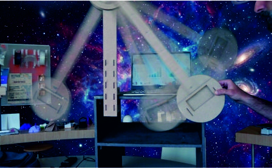

Il file admin.js non è stato caricato o contiene un errore. Chiamate il docente.

Operazione: Riconoscimento Esoplanetario
Identificate il pianeta, il tipo di suolo e la ruota del rover.
Inserite il nome della squadra per iniziare.
Vi servono due telefoni: uno resta su questa pagina, l'altro fa da sensore con Phyphox.
Il disastro di Sbadatoni
«Benvenuti, analisti. Il rover è atterrato su un esopianeta, ma il dottor Cosmo Sbadatoni ha rovesciato il caffè sui server: la telemetria arrivata dal pianeta si è mescolata con i test fatti qui sulla Terra.»
Dovete ricostruire la missione rispondendo a tre domande:
Su quale pianeta è atterrato il rover? (lo rivela la gravità)
Su quale suolo si trova?
Quale ruota monta?
Le tre postazioni si possono affrontare in qualsiasi ordine. I dati si salvano da soli: potete passare a Phyphox e tornare qui senza perdere nulla.
Pannello di controllo
Scegliete una postazione. Potete tornare a correggere i dati fino alla trasmissione finale.
1 · La gravità perduta
«Il rover ha a bordo un pendolo identico al nostro. Quattro misure sono finite nella stessa tabella: tre le ho fatte io in laboratorio, una arriva dal pianeta. Ma quale?»
La frequenza dice quante oscillazioni complete fa il pendolo in un secondo.
Lunghezza (cm)
Frequenza (Hz)
Osservate la tabella e toccate la misura che vi sembra sospetta.
Regolate il pendolo a quella lunghezza e misurate la frequenza con Phyphox.
Se la vostra misura non coincide con la tabella, avete trovato il dato alieno: confermate. Ogni conferma sbagliata costa punti.
📱 Phyphox → Pendolo
Fissate il telefono-sensore al pendolo e premete ▶.
Durante il conto alla rovescia spostate il pendolo di massimo ° e lasciatelo andare senza spingerlo.
Al termine leggete la frequenza (in Hz).
⚠️ Lanciate il pendolo con un'oscillazione di massimo °. Con oscillazioni più ampie la frequenza cambia e la misura non è più confrontabile con la tabella.
Per scovare la misura non corretta conviene prima osservare la tabella: quando la lunghezza aumenta, la frequenza scende con un passo abbastanza regolare. Concentratevi sulla misura che esce un po' dall'andamento generale, poi testatela a mano: regolate il pendolo a quella lunghezza e confrontate la frequenza di Phyphox con quella in tabella.
Perché un pendolo rivela la gravità?
Un pendolo oscilla perché la gravità lo richiama verso il basso. Dove la gravità è più forte il richiamo è più deciso e le oscillazioni sono più rapide; dove è più debole sono più lente. La massa appesa, invece, non conta. Per questo un pendolo è un ottimo misuratore di gravità da portare su un altro pianeta.
2 · Il suolo misterioso
«Il rover usa il sismopercutore Mjölnir-X per spingere un campione a esattamente cm. Sappiamo solo che il suolo d'atterraggio è quello ad attrito intermedio fra i tre campioni sul tavolo.»
Fase A · Individua il suolo
Sganciate il martello sempre dallo stesso angolo contro ciascuno dei tre blocchetti e guardate di quanto scivolano. Chi scivola di più ha meno attrito, chi scivola di meno ne ha di più. A voi serve quello di mezzo: toccatelo.
Fase B · Trova l'angolo di sgancio
Usando solo il blocchetto ad attrito intermedio, trovate l'angolo da cui sganciare il martello perché il blocchetto si fermi a cm.
📱 Phyphox → Inclinazione
Appoggiate il telefono-sensore lungo il braccio del martello e premete ▶.
Alzate il martello: l'angolo si legge in diretta sullo schermo, senza stimarlo a occhio. Qui non serve la partenza ritardata.
Togliete il telefono prima di sganciare.
Partite da un angolo piccolo e misurate dove si ferma il blocchetto. Se resta corto alzate il martello di pochi gradi, se va lungo abbassatelo: la distanza cresce più in fretta dell'angolo, quindi bastano piccole correzioni. Rimettete il blocchetto sempre nello stesso punto e ripetete due volte il lancio buono prima di scrivere l'angolo.
Perché una prova fatta sulla Terra vale anche lassù?
Dove la gravità è più forte il martello colpisce con più energia, ma anche l'attrito che frena il blocchetto è più forte, nella stessa proporzione. I due effetti si compensano: a parità di suolo e di angolo, il blocchetto percorre la stessa distanza su qualsiasi pianeta.
3 · L'enigma della ruota
Fase A · Individua la ruota
Scoprite quale delle tre ruote sul tavolo è quella montata sul rover e toccatela.
A ogni giro, una ruota che rotola senza strisciare avanza di una circonferenza. La distanza percorsa è quindi s = N · 2π · R, dove N è il numero di giri e R il raggio. Misurate il raggio delle tre ruote con il metro e provate i conti; oppure fate un segno sul bordo di una ruota e fatele fare giri lungo il metro.
Fase B · Il sensore della ruota
Il rover conta i giri con un sensore dentro la ruota. Provate a fare lo stesso con il telefono.
📱 Phyphox → Accelerazione (g inclusa)
Premete ▶, infilate il telefono-sensore nel cilindro e bloccatelo bene.
Al segnale di inizio fate rotolare il cilindro sul tavolo, senza farlo strisciare.
Al termine recuperate il telefono e guardate il grafico nel riquadro Accelerazione x.
Perché «senza strisciare» è così importante?
Il legame fra giri e distanza vale solo se la ruota fa presa sul terreno, ed è l'attrito a garantirlo. Sulla sabbia le ruote dei rover veri slittano: contano giri ma avanzano meno, e il rover crede di essere dove non è. Per questo i rover marziani controllano la posizione anche con le telecamere.
Rapporto di missione
Ecco che cosa avete ricostruito. Controllate prima di trasmettere.